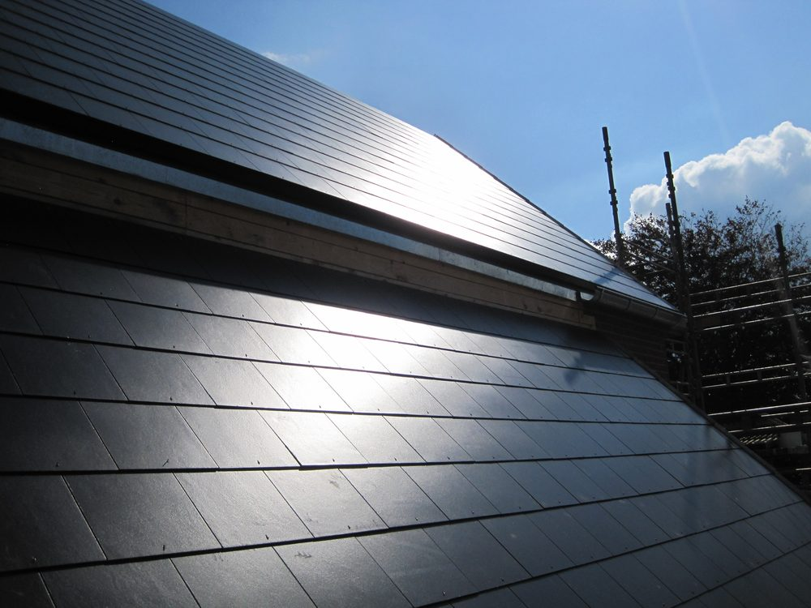

Aut. VVS-installatør · Platanvej, Herning
Alt det der ikke må gå galt.
Vand, varme, luft, gas og metal. Vi har bygget og passet installationer i Midtjylland siden 1963. Tekniq-godkendt kvalitetsstyring.

11.500m³/h, største ventilationsanlæg
4.000m², største VVS-entreprise
32navngivne referenceprojekter